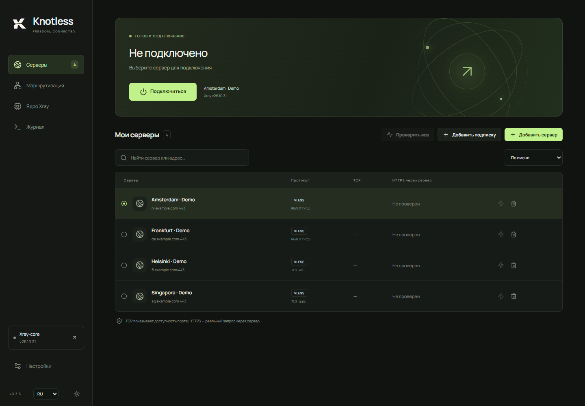

Install Knotless
Download the installer for your Windows architecture and run it. Open Knotless and approve the administrator prompt. The installer includes Xray.
Windows · Xray-core
Choose your Xray-core version and write rules for each connection. Knotless supports VLESS, device-wide TUN and local proxy mode.
v0.3.9 All releases ↗

Documentation
Download the installer for your Windows architecture and run it. Open Knotless and approve the administrator prompt. The installer includes Xray.
On the Servers page, choose Add server. Paste a vless:// link or scan a QR code with your camera. For a subscription, choose Add subscription and paste its HTTPS URL.
Select a server and click Connect. TUN is selected on first launch. The lightning button tests the TCP port and sends an HTTPS request through the server. A successful HTTPS test confirms the expected response.
Open Routing to set the default action and exceptions. This example sends traffic through the proxy and connects directly to private IP addresses. Save and reconnect to apply the rules.
default: proxy
ip(geoip:private) -> directIn local proxy mode, configure your browser to use SOCKS5 at 127.0.0.1:10808 or HTTP at 127.0.0.1:10809. In TUN mode, Settings lets you choose a DNS provider and TCP or DoH. On the Core page, install and select another Xray version for the next connection.
GitHub Releases contains installers, checksums and changes for each release.